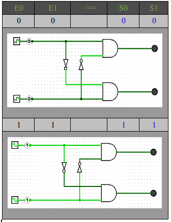

Circuitos electrónicos .
Debido a que el puerto paralelos no fue
diseñado para controlar grades cargas, Estas no tienen que superan 24
mA máximo de consumo, Debido a esta limitación, se genera la necesidad
de utilizar circuitos para crear una etapa de potencia, de esta forma
solucionamos este inconveniente .
A parte, tanto los Motores PaP bipolares utilizados para mecanizar los ejes X e Y, y el motor DC que se utiliza en el Eje Z requieren inversión de los polos. A ello va el uso de los puentes H que se describirán mas adelante.
Ejemplo:
Puerto paralelo, bus de datos , control del Motor Eje X.

Esquema General Circuitos electronicos.

Circuito de protección internlock.
El circuito de interlock como se describe en la imagen, bloquea las salidas cuando en ambas entradas (E0 Y E1) se encuentren en estado lógico alto .Se utiliza con el propósito de proteger las salidas del IC L293D. Ya que el mismo podría dañare en el caso en que se presente un valor alto en las entradas E0 Y E1 y en su salida presente un carga inductiva alta . Es muy común que a lo largo del desarrollo del proyecto el programa presente fallas y no logre finalizar adecuadamente .Pudiendo estar enviando valores altos por un tiempo prolongado hasta su desconexión. Evaluando el costo/beneficio, se resuelve que su uso e implementación es practicante fundamental. Evitando así la destrucción del IC l293D y el gasto de comprar uno nuevamente.
Segun sus entradas :
Esquema del circuito de protección
solucionamos este inconveniente .
A parte, tanto los Motores PaP bipolares utilizados para mecanizar los ejes X e Y, y el motor DC que se utiliza en el Eje Z requieren inversión de los polos. A ello va el uso de los puentes H que se describirán mas adelante.
Ejemplo:
Puerto paralelo, bus de datos , control del Motor Eje X.
Circuito X .
Esquema General Circuitos electronicos.
CIRCUTO INTERLOCK
Circuito de protección internlock.
El circuito de interlock como se describe en la imagen, bloquea las salidas cuando en ambas entradas (E0 Y E1) se encuentren en estado lógico alto .Se utiliza con el propósito de proteger las salidas del IC L293D. Ya que el mismo podría dañare en el caso en que se presente un valor alto en las entradas E0 Y E1 y en su salida presente un carga inductiva alta . Es muy común que a lo largo del desarrollo del proyecto el programa presente fallas y no logre finalizar adecuadamente .Pudiendo estar enviando valores altos por un tiempo prolongado hasta su desconexión. Evaluando el costo/beneficio, se resuelve que su uso e implementación es practicante fundamental. Evitando así la destrucción del IC l293D y el gasto de comprar uno nuevamente.
Segun sus entradas :
|  |
Para
recrear el diagrama lógico del circuito de protección . Se emplea el
HD74HC08 que es un Dip 14 en su interior encontramos 4 compuertas “AND”
y un SN54HC04 también con un encapsulado Dip 14 pero en su interior se
encuentra 6 inversores lógicos.
| HD74HC08 | SN54HC04 |
| Rango de voltaje de Operación 2v a 6v, con un bajo consumo de 20 uA Máximo en Icc . Tiempo de repuesta de 8 nS. Proporciona una salida Máxima de 4mA en 5 V . | |
Esquema del circuito de protección
CIRCUITO H
El L293D es un doble puente H integrado
en un encapsulado DIP 16 . Permite la inversión de polos en sus cuatro
salidas .Lo cual es ideal para el uso de control de motores de DC y de
motores pap bipolares.
El integrado L293D incluye cuatro circuitos para manejar cargas de potencia media, en especial pequeños motores y cargas inductivas, con la capacidad de controlar corriente hasta 600 mA en cada circuito y una tensión entre 4,5 V a 36 V.
Los circuitos individuales se pueden usar de manera independiente para controlar cargas de todo tipo y, en el caso de ser motores, manejar un único sentido de giro. Pero además, cualquiera de estos cuatro circuitos sirve para configurar la mitad de un puente H.
Los circuitos individuales se pueden usar de manera independiente para controlar cargas de todo tipo y, en el caso de ser motores, manejar un único sentido de giro. Pero además, cualquiera de estos cuatro circuitos sirve para configurar la mitad de un puente H.
El integrado permite formar, entonces, dos puentes H completos, con los que se puede realizar el manejo de dos motores. En este caso el manejo será bidireccional, con frenado rápido y con posibilidad de implementar fácilmente el control de velocidad.
Las salidas tienen un diseño que permite el manejo directo de cargas inductivas tales como relés, solenoides, motores de corriente continua y motores por pasos, ya que incorpora internamente los diodos de protección de contracorriente para cargas inductivas.
Las entradas son compatibles con niveles de lógica TTL. Para lograr esto, incluso cuando se manejen motores de voltajes no compatibles con los niveles TTL, el chip tiene patas de alimentación separadas para la lógica (VCC1, que debe ser de 5V) y para la alimentación de la carga (VCC2, que puede ser entre 4,5V y 36V).
Las salidas poseen un circuito de manejo en configuración "totem-pole" (término en inglés que se traduce como "poste de tótem", nombre que, gráficamente, nos remite a un "apilamiento" de transistores, como las figuras en los famosos totems indígenas).
En esta estructura, unos transistores en configuración Darlington conducen la pata de salida a tierra y otro par de transistores en conexión seudo Darlington aporta la corriente de alimentación desde VCC2. Las salidas tienen diodos incorporados en el interior del chip para proteger al circuito de manejo de potencia de las contracorrientes de una carga
inductiva.
Se utilizan los Diodo Schottky ( diodo de alta velocidad ) para suprimir la corriente transitoria producida por la carga inductiva.
El voltaje de los motores en este caso se establece a 5V -cc .
El integrado L293D incluye cuatro circuitos para manejar cargas de potencia media, en especial pequeños motores y cargas inductivas, con la capacidad de controlar corriente hasta 600 mA en cada circuito y una tensión entre 4,5 V a 36 V.
Los circuitos individuales se pueden usar de manera independiente para controlar cargas de todo tipo y, en el caso de ser motores, manejar un único sentido de giro. Pero además, cualquiera de estos cuatro circuitos sirve para configurar la mitad de un puente H.
Los circuitos individuales se pueden usar de manera independiente para controlar cargas de todo tipo y, en el caso de ser motores, manejar un único sentido de giro. Pero además, cualquiera de estos cuatro circuitos sirve para configurar la mitad de un puente H.
El integrado permite formar, entonces, dos puentes H completos, con los que se puede realizar el manejo de dos motores. En este caso el manejo será bidireccional, con frenado rápido y con posibilidad de implementar fácilmente el control de velocidad.
Las salidas tienen un diseño que permite el manejo directo de cargas inductivas tales como relés, solenoides, motores de corriente continua y motores por pasos, ya que incorpora internamente los diodos de protección de contracorriente para cargas inductivas.
Las entradas son compatibles con niveles de lógica TTL. Para lograr esto, incluso cuando se manejen motores de voltajes no compatibles con los niveles TTL, el chip tiene patas de alimentación separadas para la lógica (VCC1, que debe ser de 5V) y para la alimentación de la carga (VCC2, que puede ser entre 4,5V y 36V).
Las salidas poseen un circuito de manejo en configuración "totem-pole" (término en inglés que se traduce como "poste de tótem", nombre que, gráficamente, nos remite a un "apilamiento" de transistores, como las figuras en los famosos totems indígenas).
En esta estructura, unos transistores en configuración Darlington conducen la pata de salida a tierra y otro par de transistores en conexión seudo Darlington aporta la corriente de alimentación desde VCC2. Las salidas tienen diodos incorporados en el interior del chip para proteger al circuito de manejo de potencia de las contracorrientes de una carga
inductiva.
| L293D |
|
|
|
|
| Rango voltaje de operación 4,5 v a 36 v Alimentación separada de entrada lógica. Corriente de salida de 1 A por canal (600 mA para L293D) Pico Corriente de salida 2 A por canal (1,2 A para L293D) Protección ESD. Protección térmica. Maneja correctamente frecuencias de hasta 5 khz. Temperatura de operación de 0 Cº a 70 Cº funciona correctamente hasta los 90 Cº . |
|
Esquema del circuito H

Se utilizan los Diodo Schottky ( diodo de alta velocidad ) para suprimir la corriente transitoria producida por la carga inductiva.
El voltaje de los motores en este caso se establece a 5V -cc .